Every road in the Malcantone, at 1:1.
A free map for BeamNG.drive: 56 km² of Canton Ticino between Lake Lugano and the Italian border. Built from Swiss survey data, not modelled by hand.
Novaggio, Miglieglia and the Alto Malcantone. In-game screenshot of v3.0, BeamNG.drive 0.39.4.
New in v3.0
Same area, roads and buildings as v2.8, polished up close and from afar. It now uses the game's own materials, and the villages are lived in.
Released 17 October 2026 and tested in the game: about 80 s to load with a warm cache, 10.3 GB of memory at its peak, 65 to 138 fps at 13 fixed places at 2560 × 1440, Ultra, on an RTX 4070.
Trees, not shrubs. Every tree takes the model closest to its real height, and the woods outside the survey are planted from ESA WorldCover: about 330,000 more trees, so the mountains around are forest up to the top.
The game's own look. Asphalt, walls, parapets and cobbles from the game's Italy level, with tyre tracks in every lane, patches, cracked stretches and dusty edges. The ground takes its colour from the aerial photo.
Smooth curves. Roads, pavements and walls follow curves instead of straight pieces, and steep banks are a smooth skin over the terrain.
Petrol stations you can use. 8 stations with canopy, pumps and price totem, registered as the game's gas stations: stop at a pump and refuel.
Parked cars. 11,069 parking spots with white Swiss bays, where the game's traffic puts its parked cars.
Villages lived in. Shop fronts with signs and awnings, bus shelters, about 13,000 props of street life, flower boxes and woodpiles, vines on their wires in 475 vineyards.
Swiss road paint. Markings laid by the Swiss standard from the road geometry, give-way lines at every roundabout, raised traffic islands and direction signs at the exits.
The map
The Malcantone is the hilly corner of Ticino west of Lugano. Villages sit on terraces above the lake, linked by cantonal roads that switch back through chestnut woods. Ponte Tresa and Caslano are on the water; Novaggio, Breno and Arosio are nearly 600 m higher.
The outlined area on the map is the playable area, exactly as the level is built. Inside it every road and trail from the survey is drivable; outside it there is terrain and distant landscape.
- Area
- 56 km²
- Terrain
- 12.3 × 12.3 km, 1.5 m grid (swissALTI3D)
- Roads
- 228 km, 167 bridges
- Trails and tracks
- 337 km
- Buildings
- 12,792
- Trees
- 161,000 near the roads, about 530,000 on far slopes and the mountains around
- Road signs
- 286 Swiss signs, plus STOP and give-way
- Markings
- Swiss standard, laid from the road geometry
- Villages
- 8 petrol stations, 11,069 parking spots, 40 more bus shelters, about 13,000 props
- Spawn points
- 30, one in every village
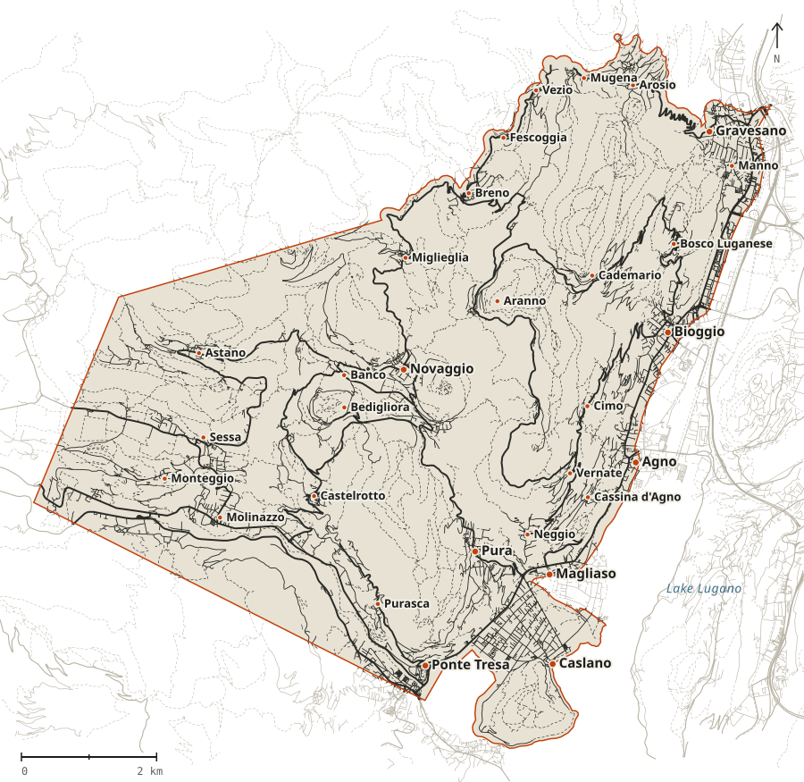
Where to start
Pick a spawn point in the game's menu once the level is loaded. Six good drives to begin with.
-
Pura 3.7 km
Magliaso to Pura, the Strada Cantonale
Where the project began, and the most detailed road on the map: markings, signs, street lamps and walls placed from the panoramas. Spawn at
spawn_magliaso. -
Gravesano 8.8 km
Along the lake
From Magliaso on the Strada Regina to Agno, then through Bioggio and Manno up to Gravesano.
-
Arosio 3.9 km
The Penudria
The Stradón da Rós, a narrow hairpin pass climbing from Gravesano up to Arosio.
-
Novaggio 9.6 km
The Alto Malcantone loop
From Arosio over Mugena, Vezio, Fescoggia and Breno down to Miglieglia and Novaggio, then back down to the lake.
-
Torrazza 2.7 km
Caslano and Via Torrazza
From Caslano station along the lake to the Torrazza, a narrow road under Monte Caslano. The cantonal road back to Ponte Tresa ends at the border bridge.
-
Sentieri 337 km
Off the asphalt
Every forest road, mule track and stairway has a solid surface. Gravel, dirt, setts and cobblestones each change the grip.
In the game
All screenshots are taken in BeamNG.drive 0.39.4 with the released v3.0 level, no HUD, the game's own light and sky. Nothing here is a render or a mock-up.

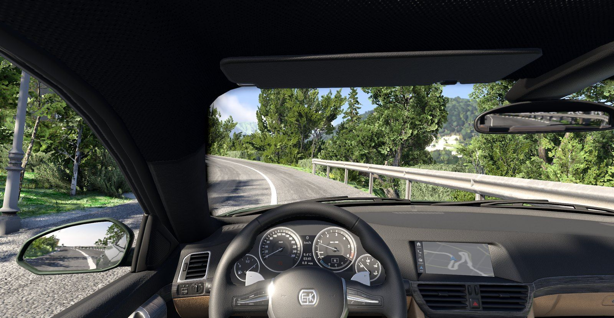
From the driver's seat on the cantonal road to Pura
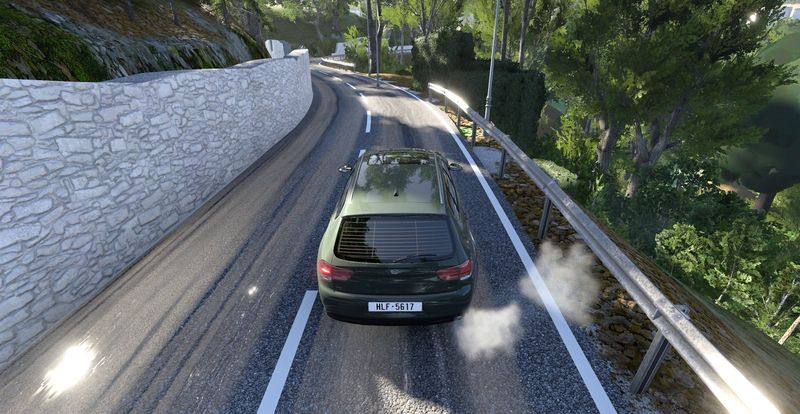
Behind the car on the cantonal road
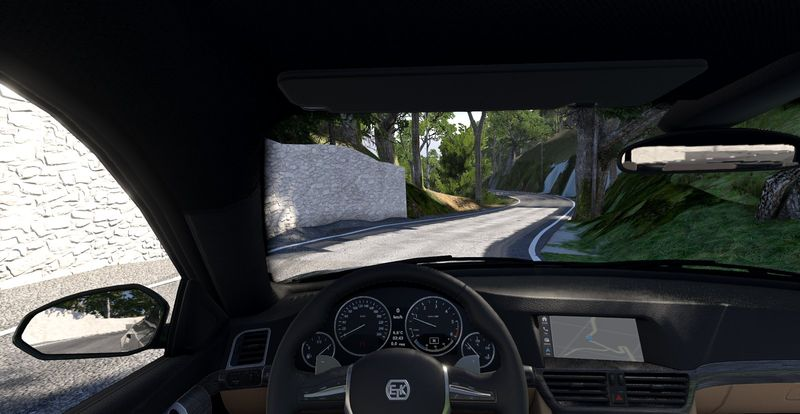
The Penudria, Gravesano to Arosio
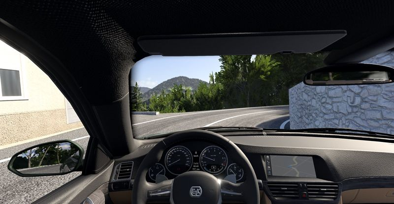
Miglieglia to Novaggio
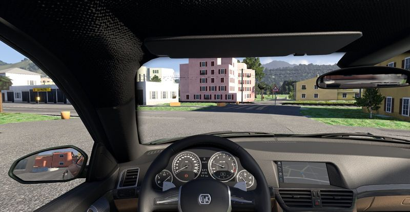
Agno along the lake
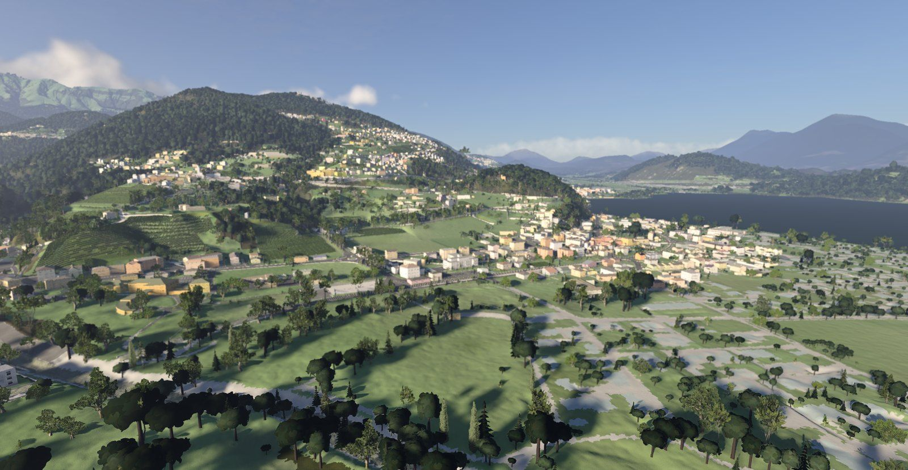
Magliaso, the Magliasina and the lake
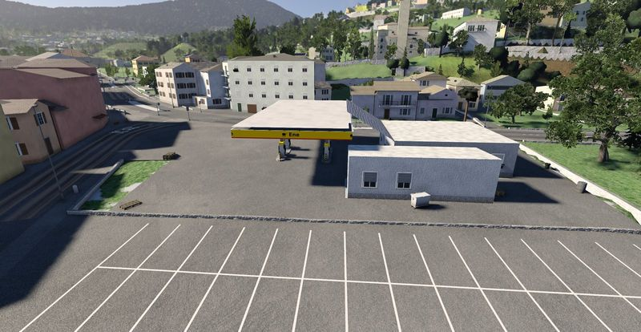
The petrol station of Magliaso Paese (a parody brand)
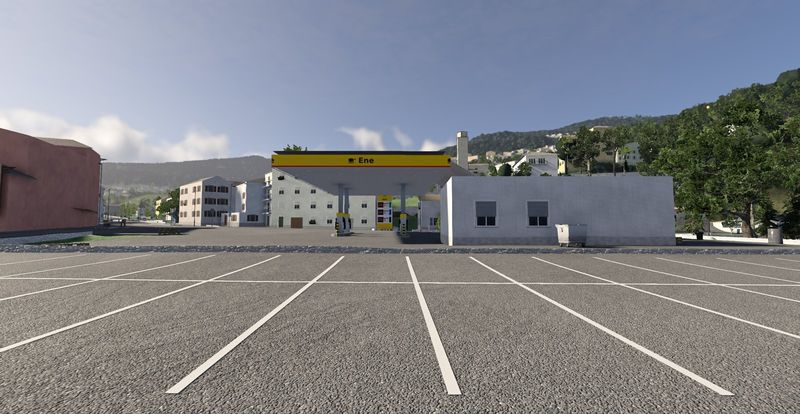
White Swiss parking bays
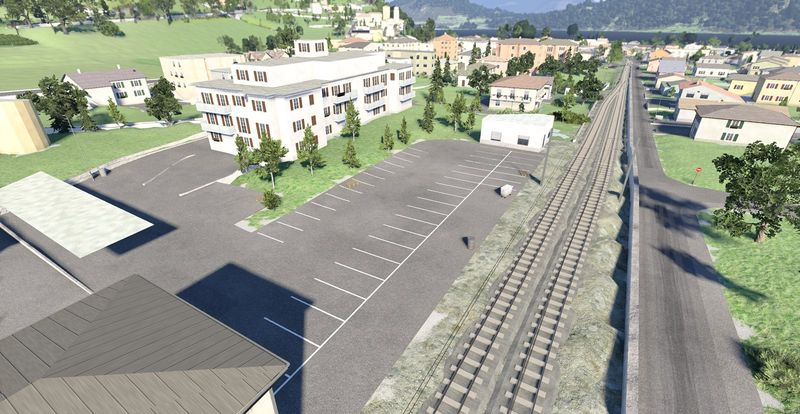
The park and ride of the FLP station Magliaso
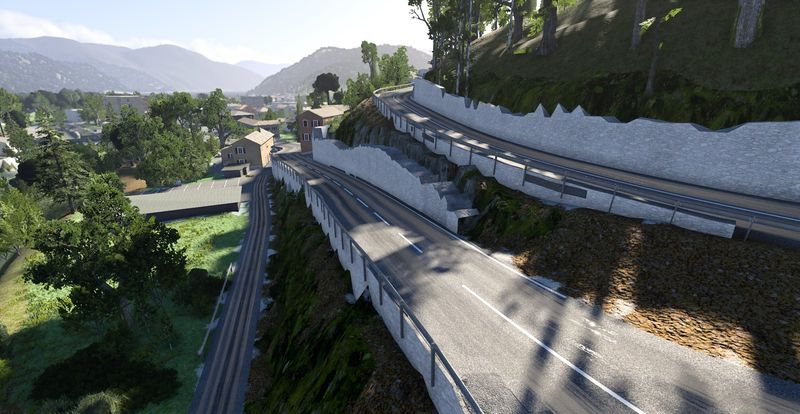
Tyre tracks through the hairpin of the cantonal road
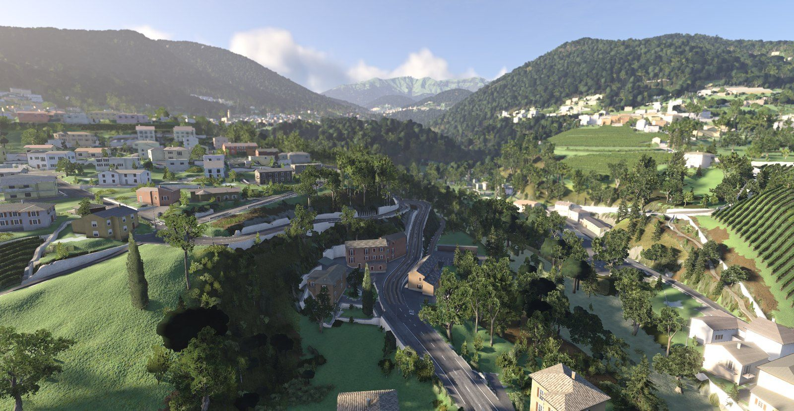
The hairpins of the cantonal road above Magliaso
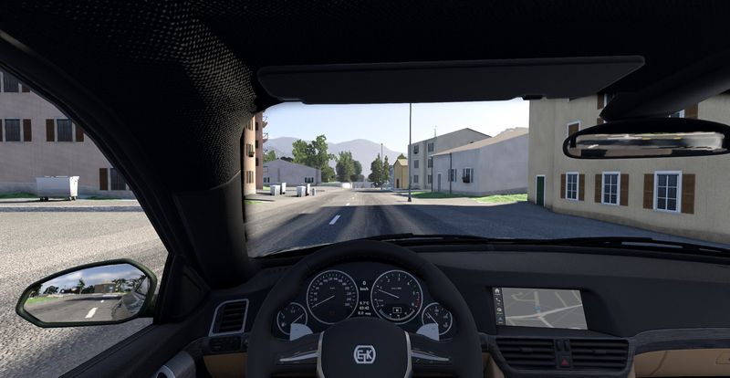
Into the roundabout of Magliaso
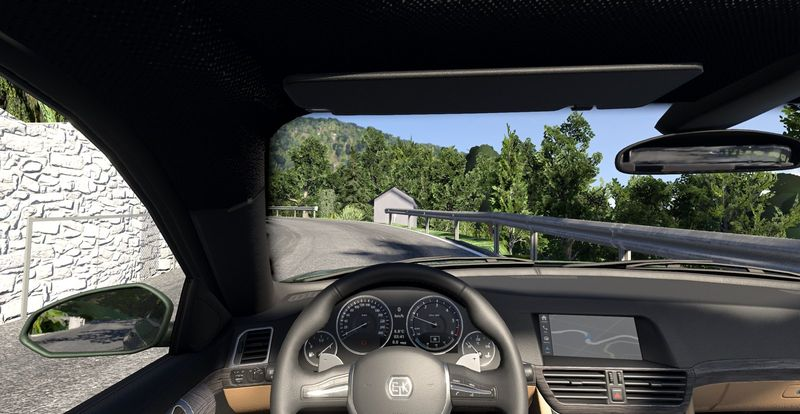
Halfway up the cantonal road
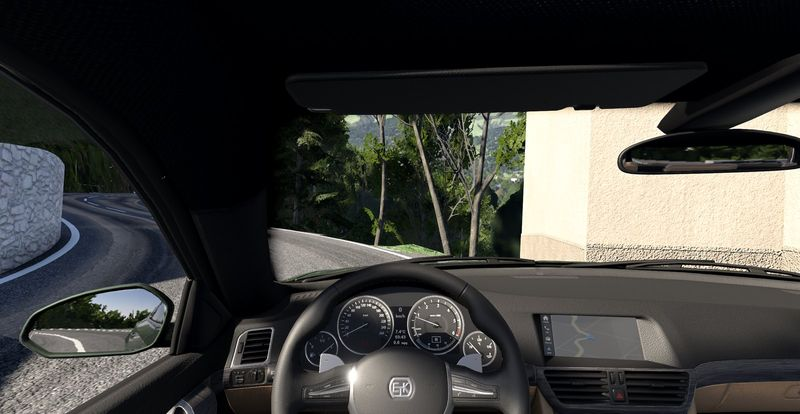
Novaggio to Miglieglia
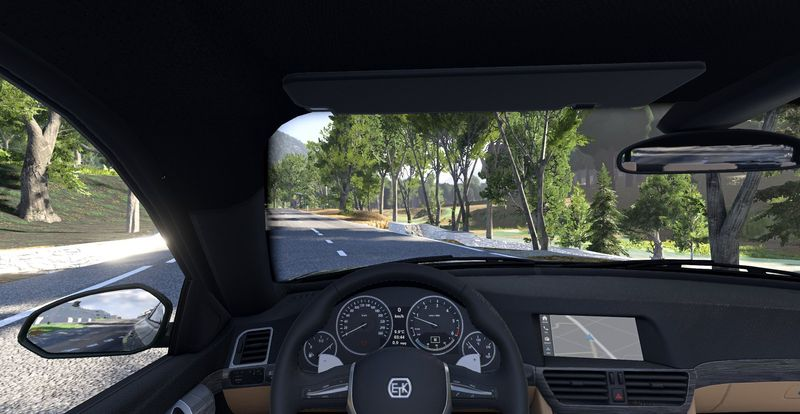
Caslano
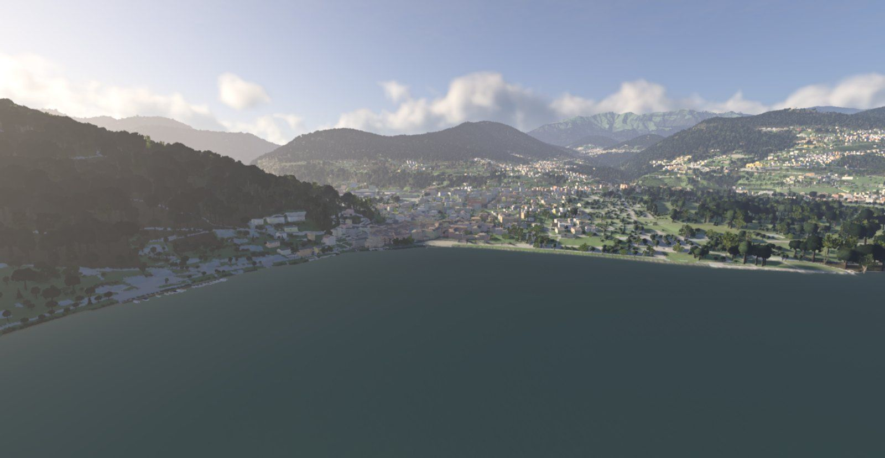
Caslano and the Torrazza
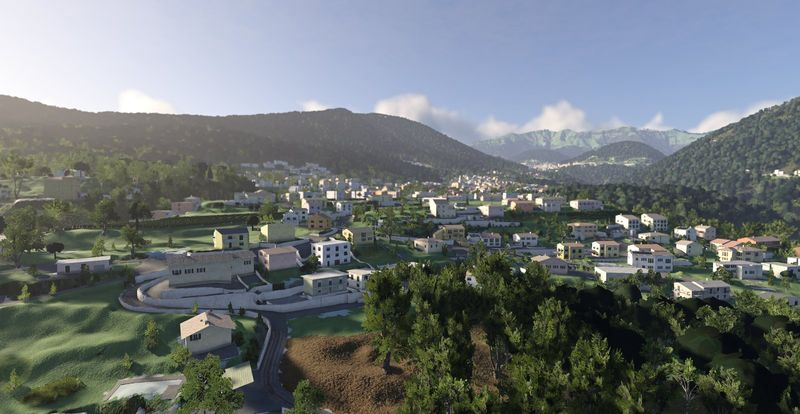
Pura
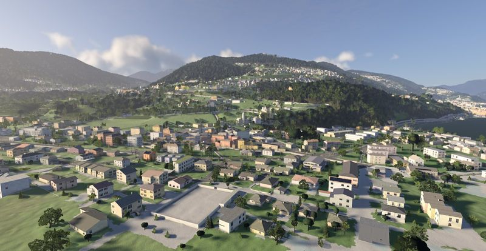
Magliaso Paese
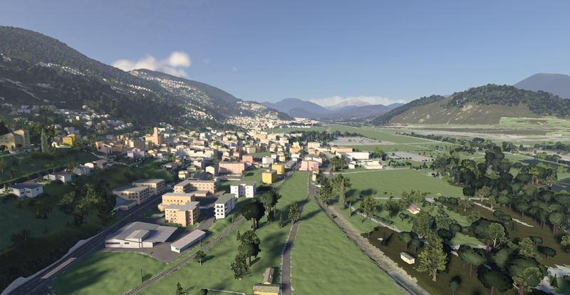
Agno and the Vedeggio plain
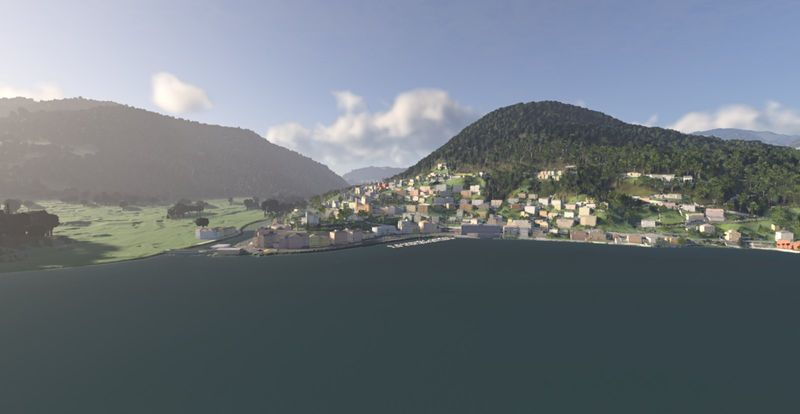
Ponte Tresa and the border bridge
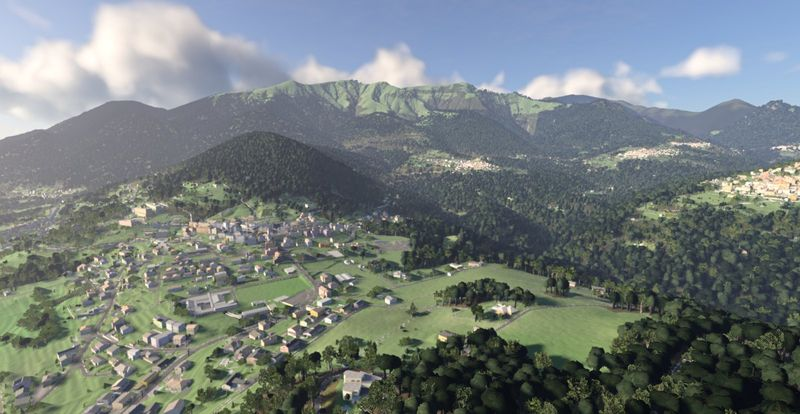
Novaggio, Miglieglia and the Alto Malcantone
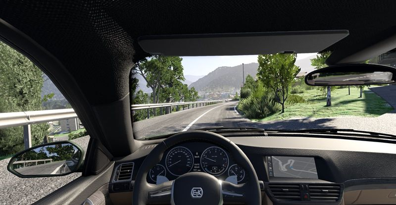
Down the cantonal road to Magliaso
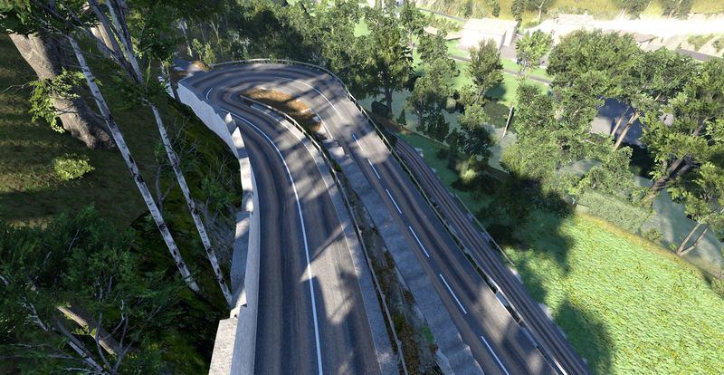
The hairpin from the valley side
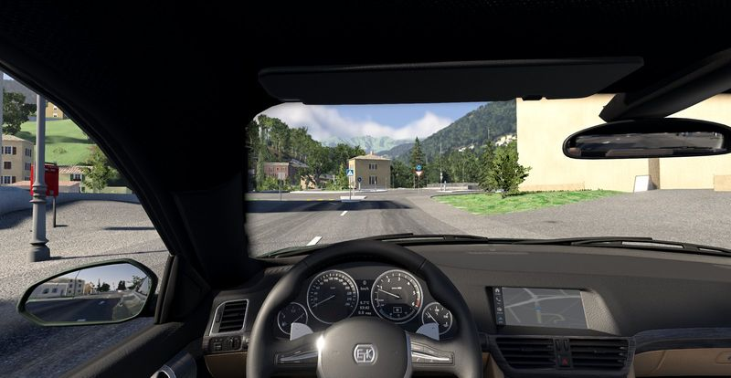
The roundabout of Magliaso, the other wayHow it's made
There is no hand-edited level file. A Python pipeline rebuilds the whole map from open data every time, and if its checks fail, no release goes out.
Google Street View panoramas were used as a reference only: to measure a façade colour, see whether a guardrail is there, or tell what a wall is made of. No Street View image is in the map or the repository.
Terrain comes from swisstopo's LiDAR model at 1.5 m. Roads are carved 10 cm into it, so the ground never pokes through the asphalt.
Roads are re-centred on the surveyed carriageway, and one least-squares fit gives the whole network a smooth height profile. Junctions meet, and gradients are the real ones.
Buildings are swissBUILDINGS3D and the cadastral survey, dressed with drawn façades, shutters, doors and shop windows. The building register sets their age and number of floors.
Trees are measured one by one in the surface model, and kept out of the road clearance.
Markings are detected in the 10 cm aerial photo and redrawn to the Swiss standard. Signs follow what OpenStreetMap maps and the rules it records.
Checks run over the whole map: a simulated car drives every road in both directions and every trail, 670 km in all, and reports every step, lift-off and hard hit.
What isn't there yet
Each limit has an open issue with the places and the possible fix.
| v3.0 is a bit heavier than v2.8: 10.3 GB of memory at its peak in the test on native Linux (v2.8: 6.4 GB), more under Windows with DirectX 12. On a 16 GB PC with a browser open it can stall after loading: close other programs and start the game with DirectX 11. | #31 |
| On the Italian side there is only terrain: no roads or buildings past the Ponte Tresa bridge. | #18 |
| Tunnels are not built. Roads and the railway stop at the portals. | #19 |
| Windows, balconies and doors are plausible, not copied house by house. | #11 |
| Direction, parking and warning signs that nobody mapped in OpenStreetMap are missing. | #21 |
| Within about 12 m the far trees look almost black. No road comes that close. | #30 |
Install
- Download
magliaso_pura_v3.0.zipfrom the latest release. - Copy the zip, still zipped, to
Documents/BeamNG.drive/current/mods/. - Remove any older
magliaso_pura_v*.zipfrom the same folder. All versions share one level name and conflict. - In the game choose Freeroam, then Malcantone - Magliaso, Pura e dintorni.
What you need
BeamNG.drive 0.39 and 16 GB of RAM. On an RTX 4070 v3.0 loaded in about 80 s with 10.3 GB of memory at its peak, and ran at 65 to 138 fps at 13 test places at 2560 × 1440, Ultra (95 on average).
The first load is the slowest, while the game converts shapes and trees and keeps them in its cache. For the parked cars, turn on parked vehicles in the game's traffic settings.
Download v3.0 zip, 1.04 GB